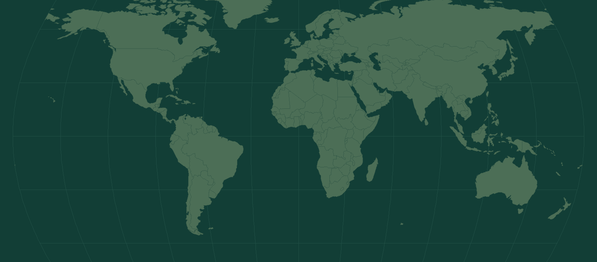

Local warm season
Warm-season LST change
0
Drag to rotate · Click a point to inspect
Explore how arranging the same amount of vegetation changes street-level greenness and warm-season surface temperature.
Move a slider to update the surface and its balanced point for the selected climate. Click the surface to inspect a configuration. Each candidate must have at least 10 nearby grids from at least three cities under similar conditions. The mesh connects neighboring supported predictions. Height shows the change in street-level green view index in percentage points. Blue means a lower warm-season surface temperature and orange means a higher one, both relative to the setting anchor. Each setting has its own labeled axes and color limits. Where objectives select the same candidate, their letters share one marker. The balanced choice minimizes the larger of the two normalized shortfalls.
Select a city to see its local warm season and explore its climate group.

Compare the configurations observed on the ground with the average response across the observed distribution of vegetation cover.
Each point represents one 500 m grid.
Of 70 candidate cities, 66 meet the warm-season requirements. Each city's warm window is its warmest consecutive three months by mean 2 m air temperature over 2016–2023. Daytime Landsat 8 land surface temperature (LST) is expressed relative to the city's warm-season median. Green view index (GVI) comes from street imagery at eligible sites. Image capture dates can differ from the temperature window.
C measures how concentrated vegetation is among 25 subcells in each grid. A measures vegetation cover in road neighborhoods. Curves vary one metric, retain observed values of the other and average predictions with equal city weights. Changes are relative to C = 0.30 or A = 15%. Shading shows pointwise 95% confidence intervals. The chart displays supported portions of the model. The fitted associations describe comparisons among observed configurations.
Within each setting we scale the shortfall from each objective’s best supported prediction by that objective’s prediction range. We select the candidate with the smallest maximum shortfall. The archived analysis supports 41 of the 48 study settings. Changes in GVI and LST are measured against the anchor for the selected setting.
Download balanced configurations (CSV) ↓World boundaries from Natural Earth via world-atlas.